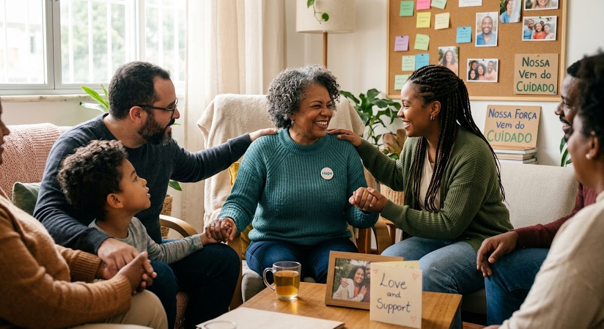
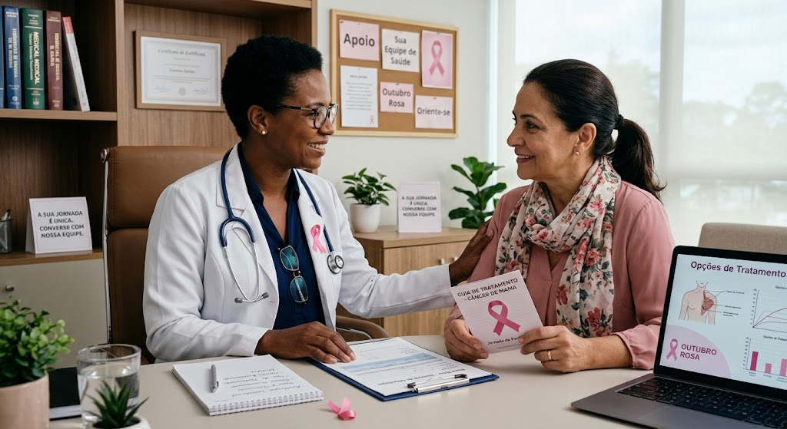
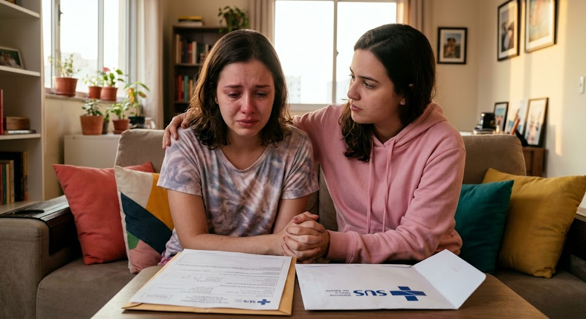

Mulheres
O acompanhamento e as decisões de tratamento devem ser conversados com a equipe de saúde, considerando a situação e as necessidades de cada pessoa.
O câncer de mama pode afetar pessoas de diferentes idades e histórias. Esta página é dedicada a quem enfrentou ou está enfrentando a doença — mulheres, crianças, pessoas idosas e homens — e também a quem oferece apoio durante cada etapa.
Se o player não carregar aqui, assista no site oficial do Globoplay. O vídeo pode exigir interação ou acesso à plataforma para reproduzir.
Assistir no GloboplayCada experiência com o câncer é única. Para algumas pessoas, vitória significa concluir uma etapa do tratamento; para outras, é encontrar apoio, atravessar um dia difícil ou seguir em frente com cuidado e esperança.
Celebrar essas trajetórias também é reconhecer a força das pessoas e a importância do apoio de familiares, amigos, profissionais de saúde e redes de acolhimento.

Pessoas de diferentes idades e gêneros podem ser afetadas pelo câncer de mama. Cada uma merece informação respeitosa, atendimento adequado e apoio sem julgamentos.
O acompanhamento e as decisões de tratamento devem ser conversados com a equipe de saúde, considerando a situação e as necessidades de cada pessoa.
Um diagnóstico nessa fase exige atenção especializada e apoio próximo. A família e a equipe de saúde podem ajudar a construir uma rede de cuidado acolhedora.
Câncer de mama também pode ocorrer em homens. Mudanças nas mamas merecem avaliação profissional em qualquer idade.

As opções de tratamento variam conforme o tipo e as características da doença e da pessoa. A equipe responsável pode explicar as alternativas, os benefícios e os possíveis efeitos de cada etapa.
Informações de outras pessoas podem trazer acolhimento, mas não substituem uma avaliação profissional. Dúvidas sobre diagnóstico, tratamento ou sintomas devem ser conversadas com a equipe de saúde.
Escutar sem julgar, acompanhar consultas quando a pessoa quiser e ajudar nas tarefas do dia a dia são formas de oferecer apoio. Respeite o tempo, as escolhas e a privacidade de cada pessoa.
Para orientação sobre atendimento e exames no Brasil, procure uma Unidade Básica de Saúde ou um profissional de saúde.

Celebramos as histórias de superação e acolhemos com respeito quem ainda está no caminho. Que toda pessoa encontre informação confiável, cuidado e uma rede de apoio.